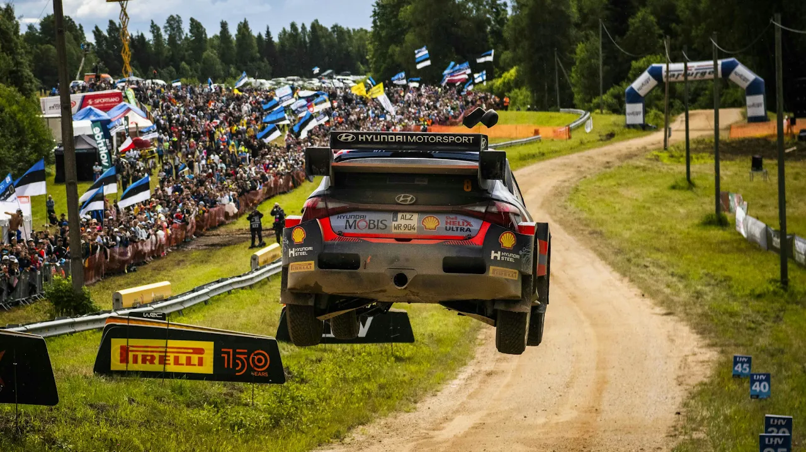
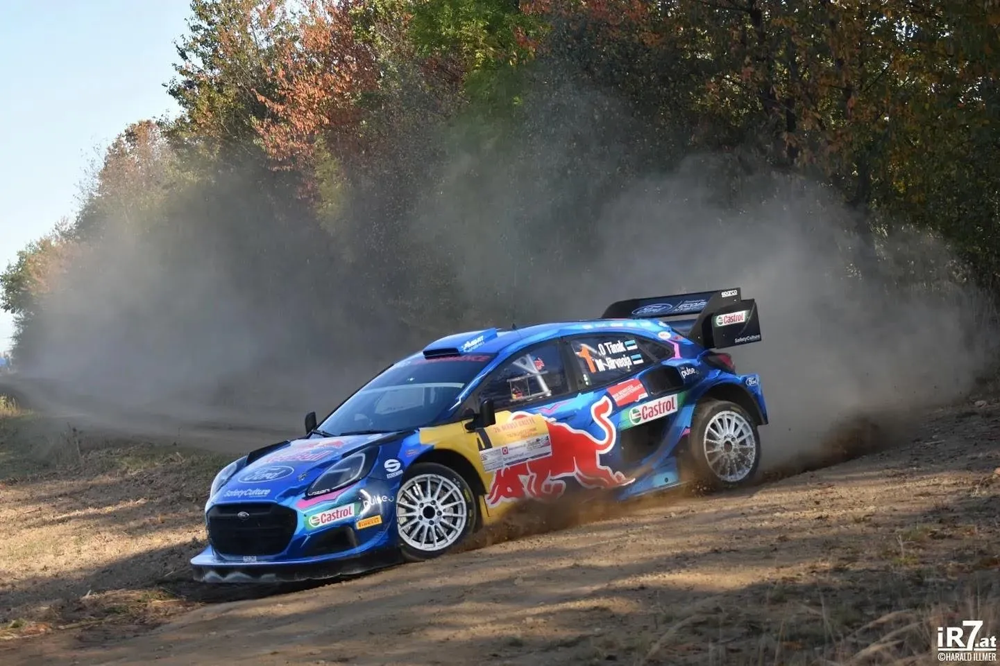
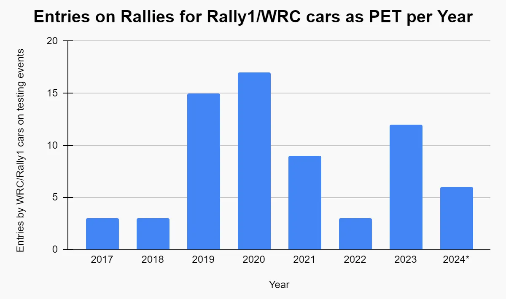
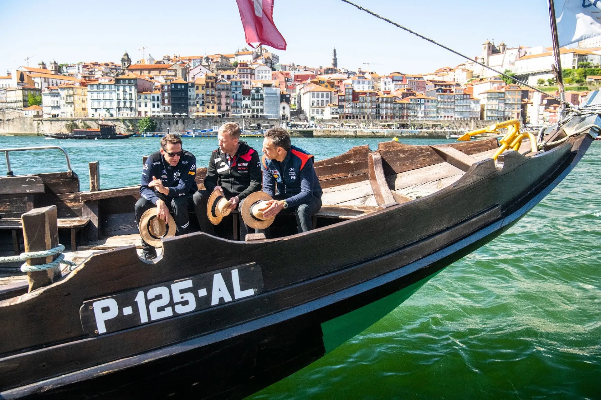
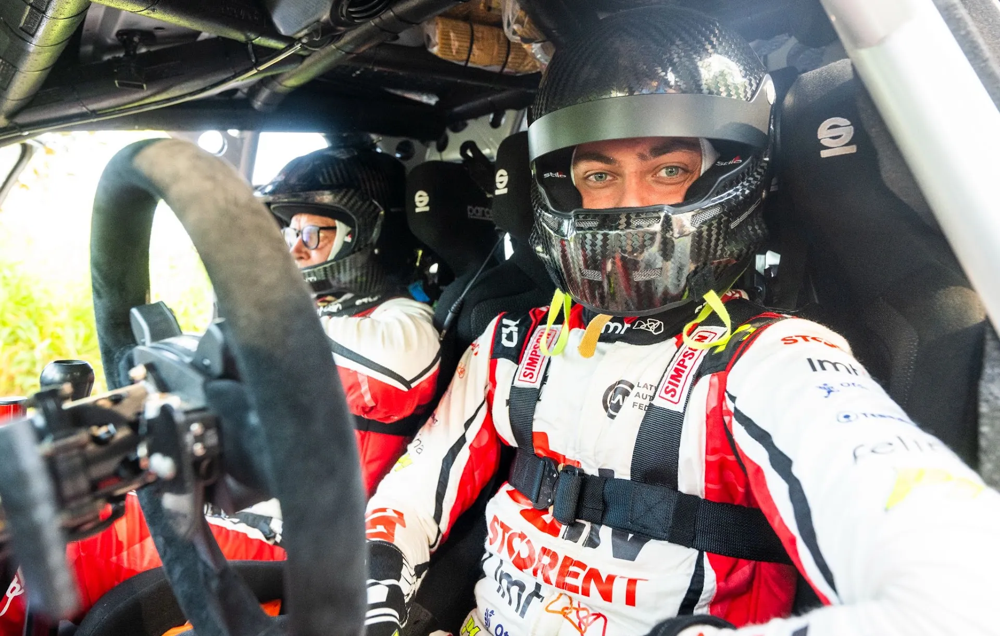
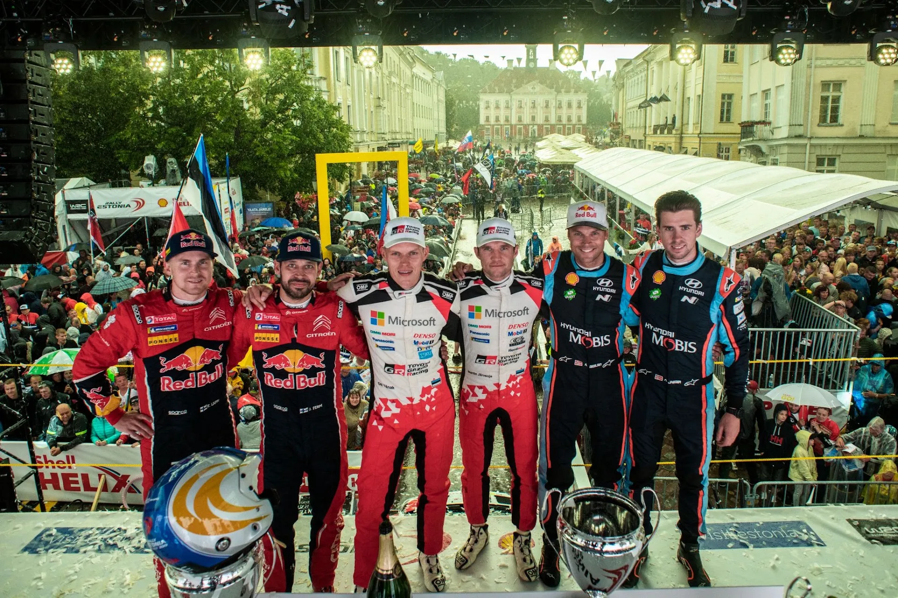
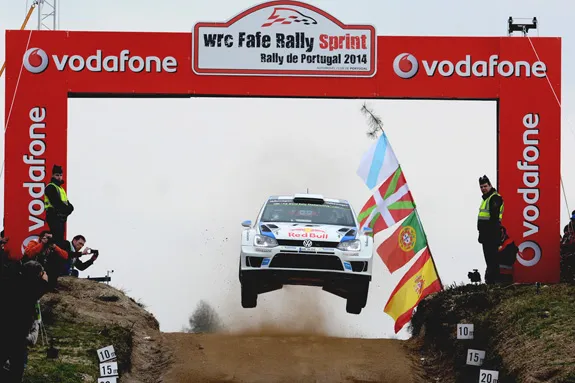
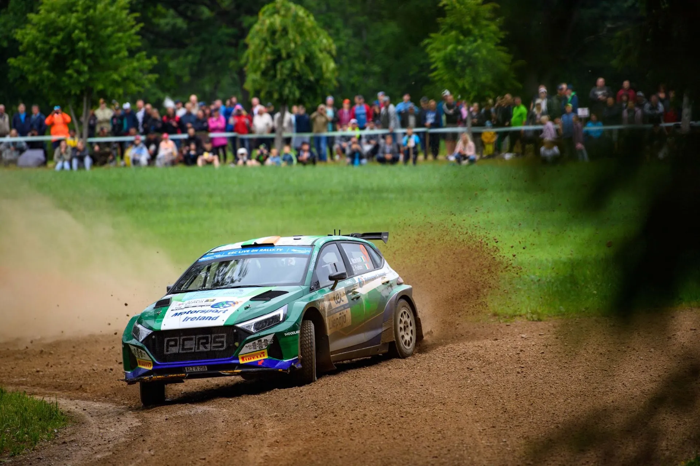
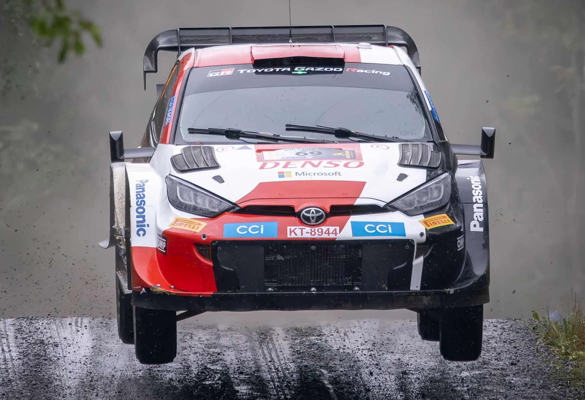

Should Pre Event Testing change?
Testing, testing, testing. There's been a lot of chat about Pre Event Testing during the break between Rally Poland and the inaugural Rally Latvia. The rules regarding testing have long been a hot topic of discussion, with drivers and fans arguing that the allocated testing mileage for each driver and team are too little. This isn't something unsubstantiated, as we see new drivers struggle compared to their more experienced teammates in recent years, something that's gotten worse in the Rally1 era, and especially on tarmac. Andreas Mikkelsen is a prime example of this.

Ott Tanak in last year's Herbst Rallye
Picture from Harald Illmer
The teams have found a loophole in those regulations, and have started sending their drivers to regional rallies, to get extra mileage. Andrea Adamo started this practice in 2019, and is now common practice among the three manufacturers. Ever since then, we've seen a big rise in teams sending cars on national events, and 2024 is no exception. Between Poland and Latvia, Ott Tanak competed in a handful of kilometres in Rally Estonia as preparation for Latvia, and Esapekka Lappi and Thierry Neuville were due to compete in a rally in Lithuania. However, due to the Estonian's terrifying off, only the former will compete in that rally.

Recently, M-Sport team boss Rich Millener expressed his frustration at how testing is conducted, saying that the teams spend up to £50k a day on testing, and get nothing in return in terms of exposure, or media content. So what could be done so that the testing regulations are more fair to young drivers or inexperienced drivers, and also so that the teams can get more "value for their buck"?

A solution to the first part of the issue has to be a partial revamp of the restrictions. What I mean is, that the regulations should be changed, so that they allow more testing for specific situations. Formula 1 has a "sliding scales" system, where teams get more or less wind tunnel time based on where they finished in the championship. A similar system for testing would not work in the WRC since there's only 3 manufacturers, so a +/- 1 day of testing would be unfair/pointless when the gaps are not so big. What I could see as a feasible solution is that drivers under a specific age, or under a set amount of seasons in the WRC top class, or drivers that have been outside of the sport for a set amount of years, get to have more days of testing.

As for the second part of the problem, I want to focus on two examples of events. Rally Estonia from 2018 and 2019, and the WRC Fafe Rally Sprint from 2012 to 2014. These two rallies, are both examples of what the promoter could do to help teams with exposure, and also to bring a better experience to the fans. Rally Estonia in 2018 and 2019, was held as a candidate event, and a promotional event. The rally attracted entries from WRC teams and it was used as a good way for the teams to get mileage for Rally Finland. It was also broadcasted on WRC+, meaning that rally fans could also experience what the stages were like, and envision how a WRC rally in that location would be.

Rally Estonia was a favourite among drivers and fans alike when it was ran as a Promotional event back in 2019
Jaanus Ree / Red Bull Content Pool
The WRC Fafe Rally Sprint was held when Rally Portugal was in the south in Algarve. It was three runs of a shortened Fafe stage, and it attracted many WRC and WRC2 regulars, giving themselves a nice PET opportunity, and the fans an opportunity to see big names in WRC machinery visit a legendary stage of Rally Portugal.

The WRC Fafe Rally Sprint from 2014 was won by Sebastien Ogier, by just 0.5s!
So what I would suggest is this. The promoter can broadcast 6 or so events that will be ran with the purpose of teams and drivers getting mileage for a rally, and simultaneously, the teams get more exposure, and the fans get a more well organised, and easier access to rally cars compared to testing days. This would also be a great way for the WRC to expand to different areas of the world, and showcase different stages. For example, next year, Rally Latvia can be run as a promotional event in a similar way to how Estonia was in 2019 and 2018, with the teams gathering data for Finland or Estonia, or Rally Croatia that looks set to be missing out on a calendar slot, can be ran as a promotional event, with the teams getting mileage for the Central European Rally. It would also be a good way for the promoter to showcase more of the ERC, by leaving some events open for testing for the Rally1 teams.

Rally Liepaja would be a great testing event for Rally1 cars for 2025
@World / Red Bull Content Pool
And also, the event organisers could work together to create "WRC Rally Sprints" just like in Fafe. For example, how about a "WRC Riudecanyes Rally Sprint" ran in Catalunya as preparation for Rally Islas Canarias? Or how about a "WRC Meteora Rally Sprint" before Acropolis (or Tarzan if the event moves to the south)? Or maybe even a "WRC Savo Rally Sprint" similar to the upcoming HYACenter Rally? These would for sure be more interesting for fans and teams alike compared to a normal day of testing. They would also be a great way for older, classic stages and locations to be showcased.

Last year, Kalle Rovanpera's onboard from Savo made the rounds on YouTube!
Picture from the organisers website
The problem is that all these ideas are good on paper, however they all cost money... and actual promoting work from the WRC promoter.


Comments